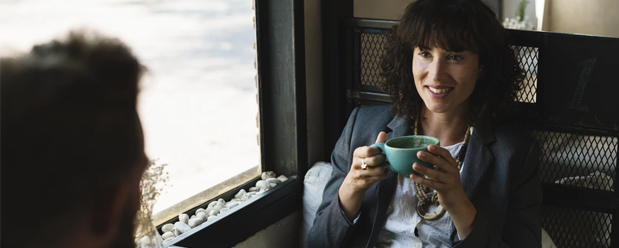

Куда пойти на первом свидании?
Первое свидание – это всегда волнительно как для девушки, так и для парня. Правильный выбор места поможет вам расслабиться и быть собой, а удачное первое свидание запомнится надолго и сможет стать началом длительных и крепких отношений.
Кафе или кофейня
Да, именно кофейня, а не ресторан, бар или ночной клуб. Там, где шумная музыка, толпа и нетрезвая публика, пообщаться и узнать друг друга лучше будет весьма сложно. Ресторан тоже не лучший вариант, ужин может «влететь в копеечку». Многие мужчины стараются впечатлить девушку на первом свидании своими финансовыми возможностями и, порой, тратят больше, чем могут себе позволить. Целью же первого свидания является совсем иное.
Выбирайте небольшие уютные кафе, где можно выпить кофе, полакомиться десертом, съесть легкий салат или вкусный завтрак.
Прогулка в парке или по набережной
Прогулка хороша тем, что, если свидание будет проходить успешно, его всегда можно спонтанно продолжить в кафе, кино. Если инициатором свидания хочет стать девушка, можно позвать молодого человека на прогулку с собакой или на пробежку. Это поможет скрыть неловкие моменты во время первого свидания, вам будет чем заняться, да и бояться, что ваше время будет впустую потрачено, не придется.
Парк развлечений
Нестандартное место для первого свидания. Вы сможете от души повеселиться вместе, расслабиться, почувствовать, будто вы снова вернулись в детство. Это сближает и помогает открыться. Катайтесь на аттракционах, посетите тир, комнату страха, кушайте мороженое, пончики и сахарную вату, отдохните и поболтайте на колесе обозрения, любуясь видами города.
Зоопарк или зооферма
Многие люди не посещали подобные места много лет, а даже если и посещали, животные никого не оставят равнодушными. Взрослые люди начинают радоваться как дети при виде очаровательных енотов, коал и лам. Для первого свидания это отличное место.
Поход в кино, театр или на мюзикл
Нам кажется, что подобный формат первых свиданий нельзя назвать самым удачным, хоть и молодые люди это часто практикуют. Не всем будет комфортно сидеть рядом с почти незнакомым человеком и молчать, либо обмениваться неловкими комментариями. Не будет возможности пообщаться и узнать друг друга.
Однако в зимнее время выбор мест для первых свиданий очень ограничен. Поэтому встреча в торговом центре, полчаса перед фильмом за чашечкой чая, а затем и сам сеанс в кино, могут вполне послужить началом долгих отношений.
Боулинг, каток или другие активные развлечения
Первое свидание на катке – классика жанра, главное убедиться, что и молодой человек, и девушка умеют кататься на коньках и с удовольствием посетили бы каток.
Боулинг, картинг, тир, прогулка верхом, катание на квадрациклах, лодке, катамаране… список можно продолжать бесконечно. Активный отдых и развлечения - всегда отличный повод повеселиться вместе, получить новые эмоции, впечатлить друг друга, а также узнать о спутнике много нового и интересного.
Даже если для первого свидания вы предпочтете что-то попроще, любое другое свидание пройдет на «ура», если вы выберите активные развлечения для совместного времяпрепровождения.
Редакция spacemir.com